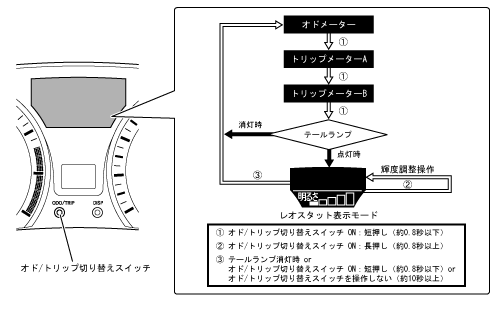

| Multi-information Display Rheostat Display Mode |
| ● |
With the power switch ON and the taillights ON (illuminated), the display can be switched to rheostat display mode by operating the odo/trip select switch.
|
| ● |
In rheostat display mode, the meter brightness can be adjusted by pressing and holding the odo/trip select switch (for approximately 0.8 seconds or more).
|
| ● |
In addition, the current adjustment value is shown on the multi-information display.
|
 Labels in this picture: Odometer オドメーター Trip Meter A トリップメーターA Trip Meter B トリップメーターB When OFF 消灯時 Tail Light テールランプ When ON 点灯時 Brightness Adjustment Operation ② 輝度調整操作② Rheostat display mode / Odo/Trip switch ON: Short press (approx. 0.8 s or less) / ② Odo/Trip switch ON: Long press (approx. 0.8 s or more) / Tail light OFF or Odo/Trip switch ON: Short press (approx. 0.8 s or less) or Odo/Trip switch not operated (approx. 10 s or more) レオスタット表示モード オド／トリップ切り替えスイッチON：短押し（約0.8秒以下）②オド／トリップ切り替えスイッチON：長押し（約0.8秒以上） テールランプ消灯時 or オド／トリップ切り替えスイッチON：短押し（約0.8秒以下）or オド／トリップ切り替えスイッチを操作しない（約10秒以上） Odo/Trip Switch オド／トリップ切り替えスイッチ |
 Dimming Characteristics Dimming Characteristics
|
 Rheostat Operation Rheostat Operation
|